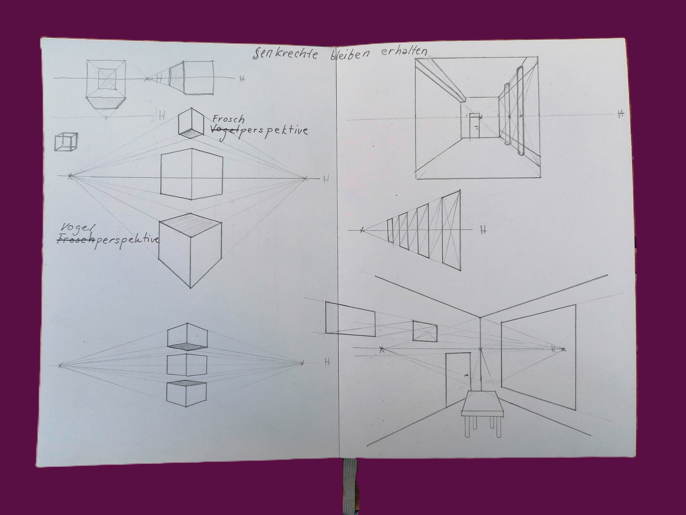
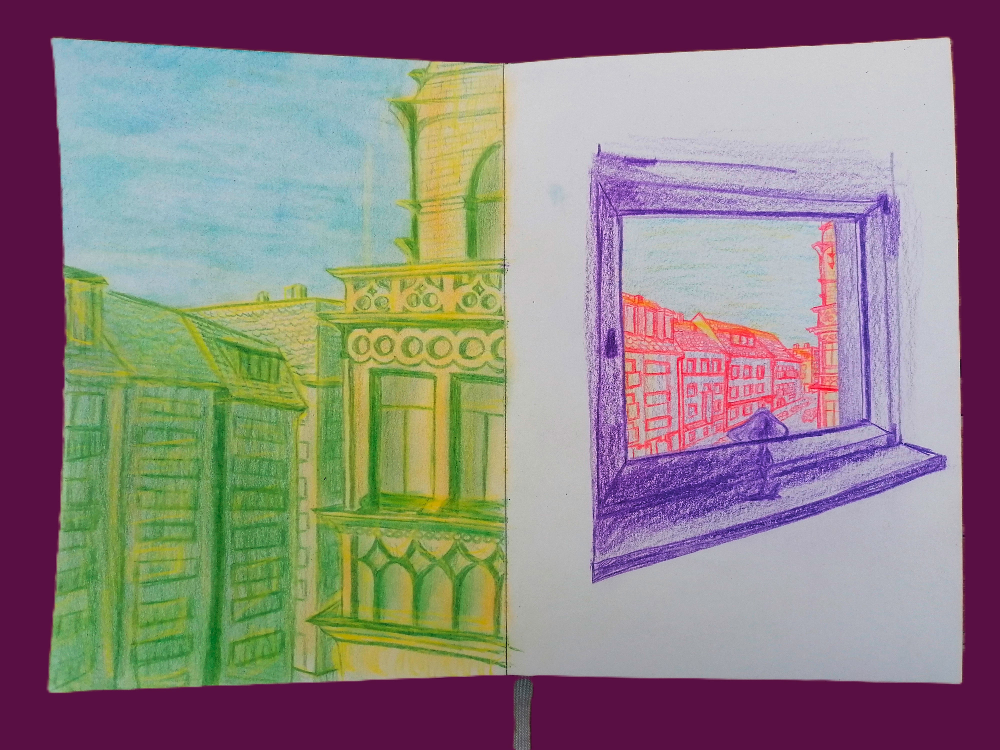
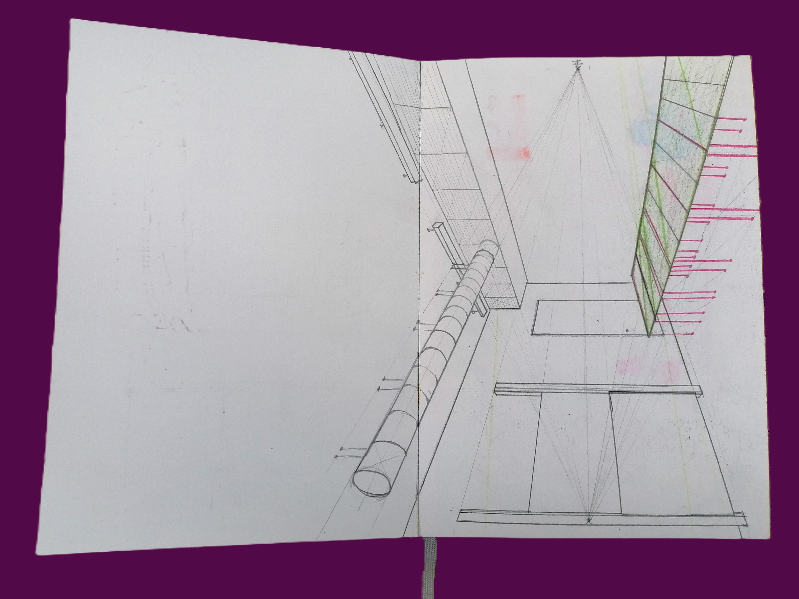
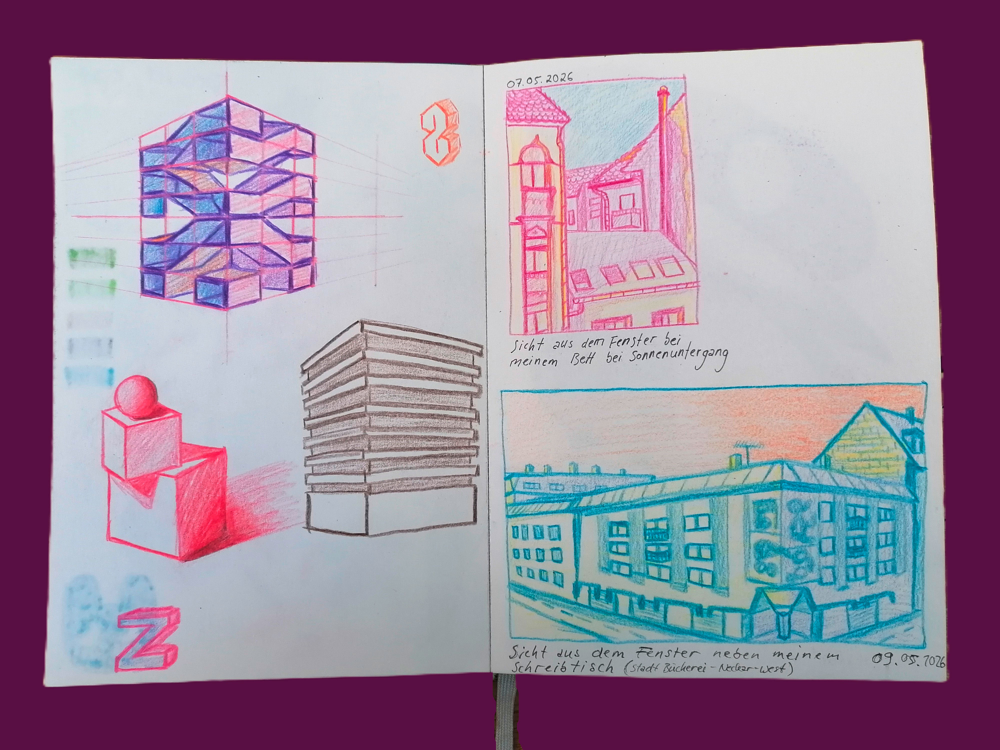
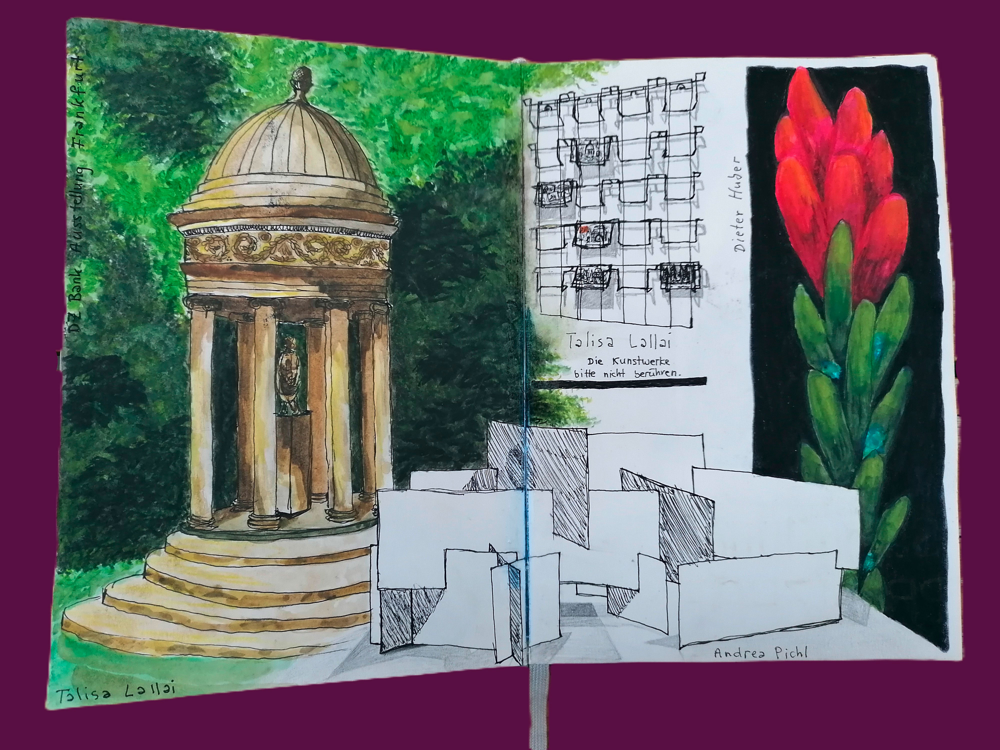

Im Rahmen des ersten Semester des Studiums Kommunikationsdesign an der TH Mannheim fertigte Zoé Zimmermann in ihrem Skizzenbuch auch die ein oder andere Architektur Zeichnung oder Malerei an. Zugegebenermaßen ist keins davon ein Meisterwerk und auch die Maßstabstreue ist hier eher fraglich, aber sie entstanden alle mit großem Spaß an der Sache. Man könnte nun spekulieren, dass damit ganz eventuell das Perspektivische-Zeichnen-Trauma aus dem Kunst Leistungskurs zu Schulzeiten aufgearbeitet und bewältigt wurde. Die Zeichnungen befinden sich alle in einem selbstgebundenen Skizzenbuch, welches von Zoé in der Druckwerkstatt hergestellt wurde. Bei dem Bindeprozess stellte sie sich etwas doof an und es dauerte ca. eine Stunde länger als zunächst angedacht, aber heyyyyy, jetzt hat sie ein cooles Skizzenbuch, bei dem sie auf Nachfrage, wo es denn herkomme, sagen kann, dass es selbstgemacht ist und das ist schon ziemlich cool. Für die Zeichnungen und Malerei verwendete sie Bleistift, Holzbuntstifte, schwarzen Fineliner und Wasserfarben.





Die Basics des perspektivischen Zeichnen klappten mit jedem Versuch besser, wobei das bevorzugte Medium der möchtegern Architektin der schwarze Fineliner ist; die Nicht-Rückgängigmachbarkeit des Stifts (im Gegensatz zu dem radierbaren Bleistift) zwingt Zoé dazu sich bei ihren Werken nicht zu sehr zu verkopfen und die Dinge so zu nehmen, wie sie beim ersten Mal von der Hand aufs Papier gebracht werden. Die Leichtigkeit der Wasserfarben haben für sie jedoch auch einen gewissen Reiz. Hier eignet sich allerding das Skizzenbuch recht schlecht, da bei einem zu leichten Farbauftrag, die Wassermenge die Seiten aus der Bindung löst, welche dann lose im Buch rumfliegen. Man kann nur gespannt in die Zukunft blicken und sich fragen, ob Zoé Zimmermann jemals wieder freiwillig eine architektonische und/oder perspektivische Zeichnung anfertigen wird.